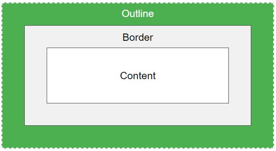

The CSS Outlineis a line that is drawn around elements outside the borders, this allows them to stand out.
Below is a visual representation from W3:
CSS Outline has the following properties:
One note, the outline is not like the border as it's drawn outside the border, and may overlap other content. Also the outline is not part of the element's dimensions. The element's total width and height is not affected by the width of the outline.
The outline-style property specifies the style of the outline, and can have one of the following values:
Below are examples of the above listed styles
I have a dotted outline.
I have a dashed outline.
I have a solid outline.
I have a double outline.
I have a grooved outline.
I have a ridged outline.
I have an inset outline.
I have an outset outline.
The properties none and hidden will have no effects, unless the outline-style property is set.
The outline-color property is used to set the color of the outline.
The colour can be set by the following as were covered in the previous colour entries:
I have a yellow grooved outline.
I have a blue inset outline.
I have an inverted outline.
The outline-width property specifies the width ofthe outline, and can have one of the following values:
I have a thin outline.
I have a medium outline.
I have a thick outline.
I have a specific sized outline.
The outline property is a shorthand property for setting for setting the individual outline properties:
The outline property is specified as one, two or three values from the list above. The order of the values doesn't matter.
The following example shows outlines specified with the shorthand outline property:
I am using the outline property.
The outline-offset property adds space between an outline and the edge/border of an element. The space between an element and its outline is transparent.
I have a 10px outline-offset.